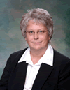

Presentors
Dr. Steve Adkison
|
Mary Brau
|

Larry CheyneLarry Cheyne is an Education Specialist with the Oregon Department of Community Colleges and Workforce Development with areas of focus in: Career and Technical Education program development and approval, Accelerated Learning Opportunities and dual credit program approval, Articulation and transfer degree policy andd Secondary to postsecondary transitions His is background is in education at the secondary level as well as broadcasting and agriculture. |
Sonya ChristianSonya has been at Lane Community College since January, 2003. She came to Lane as the Associate Vice President for Academic and Student Services. Since 2005 Sonya has held the position as Vice President for Academic and Student Affairs. Prior to joining Lane, she was a Dean of Student Learning at Bakersfield College, in Bakersfield, CA, and before that, faculty in the mathematics department. Sonya earned her doctorate at the University of California, Los Angeles (UCLA); master's in Devmathematics from the University of Southern California (USC), and an undergraduate degree in math from the University of Kerala, India. |
Jim Eustrom
|
Dr. Ben Hill
|
Christina Howard
|
Karen MarrongelleKaren Marrongelle is assistant vice chancellor for academic standards and collaborations in the Office of the Chancellor, Oregon University System. Marrongelle works in the areas of PK-20 academic standards, student learning assessment, teacher education, diversity/equity efforts, and support for the academic role of OUS faculty. Her work includes an emphasis on national, statewide and OUS initiatives directed at monitoring and enhancing the success of students as they move into and through OUS institutions. Prior to joining the Chancellor’s Office, Dr. Marrongelle served as assistant dean for research in the College of Liberal Arts and Sciences at Port land State University and was an active faculty member in the Fairborz Maseeh Department of Mathematics and Statistics between 2001 and 2011. In her work at PSU, she directed the Mathematics Education Doctoral Program, conducted an active research program in undergraduate mathematics education, and led three major National Science Foundation-funded projects focused on the professional development of K-12 mathematics teachers. From 2007-2009, Marrongelle served on a rotation as a program officer at the National Science Foundation in Washington, D.C., while a tenured faculty member at PSU. |
George PernsteinerGeorge Pernsteiner has been Chancellor of the Oregon University System since September 2005, and prior served as Acting Chancellor beginning in July 2004. Pernsteiner leads the biennial operating and capital budget process, presents proposals to the legislature and Governor, supports and facilitates the efforts of universities to achieve overall System goals, facilitates campuses’ efforts to achieve their educational missions, creates partnerships among OUS campuses, community colleges and K-12 institutions. Pernsteiner was a senior administrator at the University of California, Santa Barbara from 2002 to 2004; Vice president for Finance and Administration at Portland State University from 1995 to 2002; from 1996 through 1999, he was simultaneously the Chief Financial Officer at the University of Oregon (UO) and the Vice President at PSU; from 1989 to 1995, Pernsteiner served as Associate Vice Chancellor for Administration for OUS. Before coming to Oregon, Pernsteiner was Director of the Department of Administrative Services for the City of Seattle, and served a number of other public administrative positions in Seattle with the mayor’s office. George Pernsteiner holds a B.A. in Political Science from Seattle University and a MA in Public Administration from the University of Washington. |

Dr. Camille (Cam) PreusDr. Camille (Cam) Preus is the Commissioner of the Department of Community Colleges and Workforce Development. The department provides leadership and advocacy with the Governor, the legislature, and other statewide stakeholders for Oregon’s 17 community colleges, 7 workforce investment areas, and many community based organizations. Prior to her appointment as Commissioner, Cam held leadership roles in workforce development at the local and state levels. Cam speaks frequently at national forums about education and workforce development topics where she focuses on her philosophy of state and local partnership for improved service delivery and results for people. Prior to her government service, she held positions as a chemist and quality control manager with United States Steel. Cam graduated from Cumberland Junior College, Middle Tennessee State University, earned an MSBA from Indiana University and received her doctorate in Community College Leadership from Oregon State University. |
Dr. Hal Sadofsky
|

Carol Schaafsma
|
Maureen SevignyMaureen Sevigny is a Professor in the Department of Management at Oregon Institute of Technology and the Director of the Management Department’s Distance Education Programs. She joined OIT in 1995. Maureen earned a BA in history from Barnard College, an MBA with a concentration in business economics from New York University, and a PhD in economics from the University of Maryland. Maureen served as Chair of the Management Department at OIT from 2000-2003 and worked with the Statewide Business Chairs and Deans group to develop the AS-OT/Business degree. Maureen also played an active role in designing the Oregon Transfer Module (OTM) in 2004 as a member of the Interinstitutional Faculty Senate (IFS). She served on the Joint Boards Articulation Commission (JBAC) from 2005-2009 where she was actively involved in the statewide initiative to define outcomes and criteria for general education courses. Outside of academia, Maureen is a dedicated bicyclist who has logged over 60,000 miles on her 24-year old touring bike including three trips across the United States. She is serving her second four-year term on the governor-appointed Oregon Bicycle and Pedestrian Advisory Committee. |
Dev SinhaDev Sinha has been in the Mathematics Department at the University of Oregon for nine years, and is now an Associate Professor. Before that he did postdoctoral work at Brown University, his PhD at Stanford University and his undergraduate work at MIT. He is one of the leading researchers in questions at the interface of algebraic topology and geometric topology, with his work supported by the National Science Foundation. The NSF has also sponsored innovative programs he has run for training graduate students and postdocs, part of his strong interests across K-20 education. At the undergraduate level, he is a leader in the community of scholars developing "student work first" teaching techniques in mathematics, having run a panel on such techniques sponsored by the Mathematical Association of America. At the elementary level, he has been focussed on training preservice teachers and is currently working with the Illustrative Mathematics Project, led by one of the lead writers of the Common Core State Standards in Mathematics, writing tasks which clarify and elaborate on the mathematical expectations which are embedded in the CCSSM. |
Kate SullivanKate Sullivan is a faculty member in the English department, former composition coordinator of the writing program, member of the Information Literacy Advisory Group of Oregon, and past chair of OWEAC, the Oregon Writing and English Advisory Committee. She teaches writing and film courses and has an interest in the literacy practices of community college students. |
Dr. Sarah UlerickDr. Sarah Ulerick's career in education began with a part-time teaching experience in a community college in 1975. She received her doctorate in Science Education in 1981 from the University of Texas at Austin, where she also completed the Community College Teaching Internship Program. She has taught in middle school, high school, community college, and university at both graduate and undergraduate levels. At Lane she taught Geology for 10 years prior to becoming Science Division Dean. As an instructor, she based learning and assessment on clearly stated outcomes and rubrics. She has helped lead the college efforts to assess student learning outcomes since 2004. Her work on the Assessment Team and AACU Roadmap Team is directly related to the Degree Qualifications Profile work. |
Mark WilliamsMark Williams is currently Dean of Career and Technical Education at Umpqua Community College. Previously he worked at Lane Community College both as Dean of CIS/Business Division, and as a CIS faculty member and in a technical role developing the use of web servers related to instruction. |